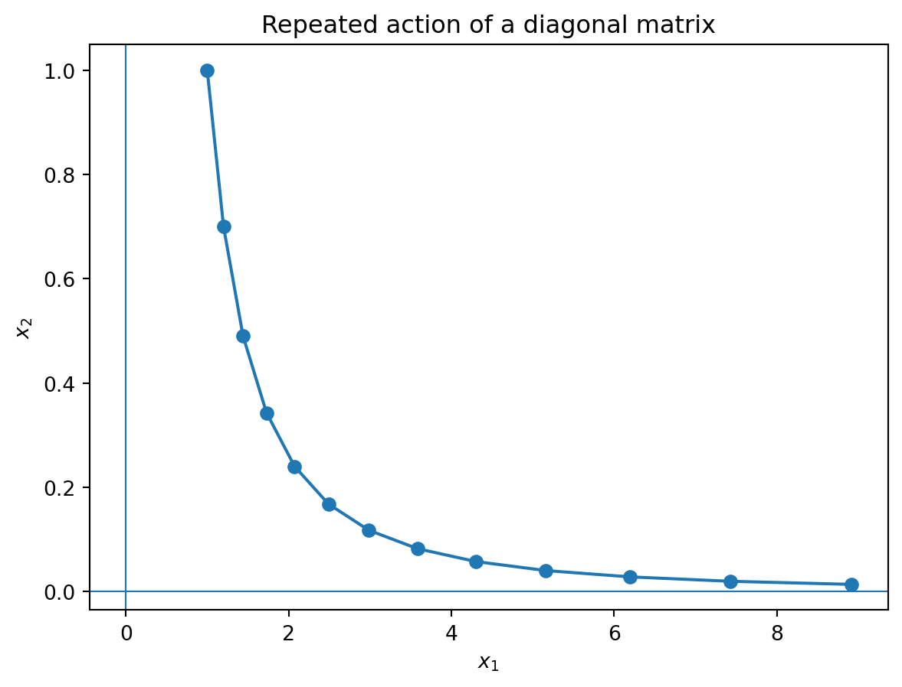

Code
import sympy as sp
A = sp.Matrix([[3, -2], [1, 0]])
A**10\(\displaystyle \left[\begin{matrix}2047 & -2046\\1023 & -1022\end{matrix}\right]\)
From repeated matrix action to hidden coordinate systems
Guiding question.
When a matrix acts again and again, which directions survive, grow, decay, rotate, or dominate?
A matrix is not only a table of numbers. It is a machine that moves vectors. Sometimes this machine mixes all coordinates together. But sometimes there are special directions that the matrix does not turn into a different direction. Along those directions, the matrix only stretches, shrinks, reverses, or kills the vector.
Those special directions are eigenvectors, and the stretching factors are eigenvalues.
This chapter develops eigenvalues and diagonalization as a story about finding the right coordinate system. In the standard coordinates, a matrix may look complicated. In an eigenvector coordinate system, the same transformation may become diagonal, and diagonal matrices are easy to understand, compute with, and interpret.
This chapter follows three connected levels:
Proofs and solutions are placed in expandable boxes so that students can first try the ideas independently.
Use AI tools as a mathematical conversation partner. Ask for explanations, counterexamples, geometric interpretations, or code checks. Always verify symbolic computations yourself or with Python.
Suppose a system evolves by
\[ \mathbf{x}_{k+1}=A\mathbf{x}_k. \]
Then
\[ \mathbf{x}_k=A^k\mathbf{x}_0. \]
So understanding the long-term behavior of the system means understanding powers of \(A\).
For a general matrix, powers can be hard to compute directly. But for a diagonal matrix
\[ D= \begin{bmatrix} d_1&0&\cdots&0\\ 0&d_2&\cdots&0\\ \vdots&\vdots&\ddots&\vdots\\ 0&0&\cdots&d_n \end{bmatrix}, \]
we have
\[ D^k= \begin{bmatrix} d_1^k&0&\cdots&0\\ 0&d_2^k&\cdots&0\\ \vdots&\vdots&\ddots&\vdots\\ 0&0&\cdots&d_n^k \end{bmatrix}. \]
Thus diagonal matrices are easy because each coordinate evolves independently.
The central question is:
Can we change coordinates so that a complicated matrix becomes diagonal?
Let \(A\in \mathbb F^{n\times n}\). We say that \(A\) is diagonalizable over \(\mathbb F\) if there exists an invertible matrix \(P\in \mathbb F^{n\times n}\) and a diagonal matrix \(D\in \mathbb F^{n\times n}\) such that
\[ A=PDP^{-1}. \]
Equivalently, \(A\) is diagonalizable if it is similar to a diagonal matrix.
If \(A=PDP^{-1}\), then
\[ A^k=PD^kP^{-1}. \]
This is one of the most useful formulas in applied linear algebra.
The factorization
\[ A=PDP^{-1} \]
means:
Let
\[ A=\begin{bmatrix}3&-2\\1&0\end{bmatrix}. \]
The vectors
\[ \mathbf{v}_1=\begin{bmatrix}1\\1\end{bmatrix}, \qquad \mathbf{v}_2=\begin{bmatrix}2\\1\end{bmatrix} \]
satisfy
\[ A\mathbf{v}_1=\mathbf{v}_1, \qquad A\mathbf{v}_2=2\mathbf{v}_2. \]
Thus
\[ P=\begin{bmatrix}1&2\\1&1\end{bmatrix}, \qquad D=\begin{bmatrix}1&0\\0&2\end{bmatrix}, \]
and
\[ A=PDP^{-1}. \]
Therefore
\[ A^{10}=PD^{10}P^{-1} =\begin{bmatrix}2047&-2046\\1023&-1022\end{bmatrix}. \]
import sympy as sp
A = sp.Matrix([[3, -2], [1, 0]])
A**10\(\displaystyle \left[\begin{matrix}2047 & -2046\\1023 & -1022\end{matrix}\right]\)
The computation agrees with the diagonalization formula.
Diagonalization is built from special vectors.
Let \(A\in \mathbb F^{n\times n}\). A nonzero vector \(\mathbf{v}\in \mathbb F^n\) is an eigenvector of \(A\) if there exists a scalar \(\lambda\in \mathbb F\) such that
\[ A\mathbf{v}=\lambda \mathbf{v}. \]
The scalar \(\lambda\) is called an eigenvalue of \(A\) corresponding to \(\mathbf{v}\).
The word “eigen” means “own” or “characteristic.” An eigenvector is a direction belonging naturally to the transformation.
The zero vector is never called an eigenvector, even though \(A\mathbf{0}=\lambda\mathbf{0}\) for every scalar \(\lambda\). If the zero vector were allowed, every scalar would become an eigenvalue, and the definition would lose meaning.
If
\[ A\mathbf{v}=\lambda\mathbf{v}, \]
then \(A\) maps the line \(\operatorname{span}\{\mathbf{v}\}\) into itself.
An eigenbasis of \(\mathbb F^n\) for a matrix \(A\) is a basis of \(\mathbb F^n\) consisting entirely of eigenvectors of \(A\).
Let \(A\in \mathbb F^{n\times n}\). Then \(A\) is diagonalizable over \(\mathbb F\) if and only if \(\mathbb F^n\) has a basis consisting of eigenvectors of \(A\).
More explicitly, if
\[ A\mathbf{v}_i=\lambda_i\mathbf{v}_i, \qquad i=1,\ldots,n, \]
and \(\mathbf{v}_1,\ldots,\mathbf{v}_n\) are linearly independent, then
\[ P=[\mathbf{v}_1\ \cdots\ \mathbf{v}_n], \qquad D=\operatorname{diag}(\lambda_1,\ldots,\lambda_n), \]
and
\[ A=PDP^{-1}. \]
Suppose \(A\) has a basis of eigenvectors \(\mathbf{v}_1,\ldots,\mathbf{v}_n\) with
\[ A\mathbf{v}_i=\lambda_i\mathbf{v}_i. \]
Let
\[ P=[\mathbf{v}_1\ \cdots\ \mathbf{v}_n], \qquad D=\operatorname{diag}(\lambda_1,\ldots,\lambda_n). \]
Since the vectors form a basis, \(P\) is invertible. Also,
\[ AP=[A\mathbf{v}_1\ \cdots\ A\mathbf{v}_n] =[\lambda_1\mathbf{v}_1\ \cdots\ \lambda_n\mathbf{v}_n] =PD. \]
Multiplying on the right by \(P^{-1}\) gives
\[ A=PDP^{-1}. \]
Conversely, suppose \(A=PDP^{-1}\), where \(D\) is diagonal. Then
\[ AP=PD. \]
The columns of \(P\) are linearly independent because \(P\) is invertible. If \(D=\operatorname{diag}(\lambda_1,\ldots,\lambda_n)\), the equation \(AP=PD\) says that the \(i\)th column of \(P\) is an eigenvector with eigenvalue \(\lambda_i\). Thus the columns of \(P\) form an eigenbasis.
The equation
\[ A\mathbf{v}=\lambda\mathbf{v} \]
can be rewritten as
\[ (A-\lambda I)\mathbf{v}=\mathbf{0}. \]
For a nonzero solution \(\mathbf{v}\) to exist, the matrix \(A-\lambda I\) must be singular.
Let \(A\in \mathbb F^{n\times n}\). A scalar \(\lambda\in \mathbb F\) is an eigenvalue of \(A\) if and only if
\[ \det(A-\lambda I)=0. \]
The equation \(\det(A-\lambda I)=0\) is called the characteristic equation of \(A\).
The polynomial
\[ f_A(\lambda)=\det(A-\lambda I) \]
is called the characteristic polynomial of \(A\).
A scalar \(\lambda\) is an eigenvalue exactly when there exists a nonzero vector \(\mathbf{v}\) such that
\[ (A-\lambda I)\mathbf{v}=\mathbf{0}. \]
This means the homogeneous system with coefficient matrix \(A-\lambda I\) has a nontrivial solution. A square homogeneous system has a nontrivial solution exactly when its coefficient matrix is not invertible. Therefore
\[ A-\lambda I \text{ is singular} \quad \Longleftrightarrow \quad \det(A-\lambda I)=0. \]
Let
\[ A=\begin{bmatrix}2&5\\3&4\end{bmatrix}. \]
Then
\[ \det(A-\lambda I) =\det\begin{bmatrix}2-\lambda&5\\3&4-\lambda\end{bmatrix} =(2-\lambda)(4-\lambda)-15. \]
Thus
\[ \lambda^2-6\lambda-7=0, \]
so
\[ \lambda=7,\ -1. \]
lam = sp.symbols('lambda')
A = sp.Matrix([[2, 5], [3, 4]])
char_poly = (A - lam*sp.eye(2)).det().expand()
sp.factor(char_poly)\(\displaystyle \left(\lambda - 7\right) \left(\lambda + 1\right)\)
Let
\[ B=\begin{bmatrix}2&1\\-1&4\end{bmatrix}. \]
Then
\[ \det(B-\lambda I) =(2-\lambda)(4-\lambda)+1 =\lambda^2-6\lambda+9 =(\lambda-3)^2. \]
So the only eigenvalue is \(\lambda=3\), with algebraic multiplicity \(2\).
The trace of a square matrix \(A=[a_{ij}]\in \mathbb F^{n\times n}\) is
\[ \operatorname{tr}(A)=a_{11}+a_{22}+\cdots+a_{nn}. \]
For a \(2\times 2\) matrix
\[ A=\begin{bmatrix}a&b\\c&d\end{bmatrix}, \]
the characteristic polynomial is
\[ \det(A-\lambda I)=\lambda^2-\operatorname{tr}(A)\lambda+\det(A). \]
If \(A\) is upper triangular or lower triangular, then the eigenvalues of \(A\) are its diagonal entries, counted with algebraic multiplicity.
If \(A\) is triangular, then \(A-\lambda I\) is also triangular. The determinant of a triangular matrix is the product of its diagonal entries. Thus
\[ \det(A-\lambda I)=(a_{11}-\lambda)(a_{22}-\lambda)\cdots(a_{nn}-\lambda). \]
The roots of this polynomial are exactly
\[ a_{11},a_{22},\ldots,a_{nn}. \]
Let
\[ A=\begin{bmatrix} 2&5&\sqrt{2}\\ 3&4&7\\ 0&0&3 \end{bmatrix}. \]
This matrix is block upper triangular:
\[ A=\begin{bmatrix}B&*\\0&3\end{bmatrix}, \qquad B=\begin{bmatrix}2&5\\3&4\end{bmatrix}. \]
Therefore
\[ \det(A-\lambda I)=\det(B-\lambda I)(3-\lambda). \]
From Example 7.2, \(B\) has eigenvalues \(7\) and \(-1\). Hence \(A\) has eigenvalues
\[ 7,\ -1,\ 3. \]
Let \(\lambda\) be an eigenvalue of \(A\). The eigenspace corresponding to \(\lambda\) is
\[ E_\lambda=\operatorname{Nul}(A-\lambda I). \]
It consists of the zero vector together with all eigenvectors corresponding to \(\lambda\).
Let \(\lambda_0\) be an eigenvalue of \(A\).
The algebraic multiplicity of \(\lambda_0\) is its multiplicity as a root of the characteristic polynomial.
The geometric multiplicity of \(\lambda_0\) is
\[ \dim E_{\lambda_0}. \]
For every eigenvalue \(\lambda\),
\[ 1\leq \dim E_\lambda \leq \text{algebraic multiplicity of }\lambda. \]
The eigenspace is nonzero because \(\lambda\) is an eigenvalue, so its dimension is at least \(1\).
The upper bound is deeper. If \(\dim E_\lambda=r\), choose a basis of \(E_\lambda\) and extend it to a basis of the whole space. In this basis, the matrix of the transformation has a block triangular form whose first \(r\) diagonal entries are \(\lambda\). Therefore the characteristic polynomial has at least \(r\) factors corresponding to \(\lambda\). Hence \(r\) cannot exceed the algebraic multiplicity.
Let
\[ A= \begin{bmatrix} 4&-1&0\\ 2&1&0\\ 2&-1&2 \end{bmatrix}. \]
We will diagonalize \(A\), if possible.
First compute
\[ A-\lambda I= \begin{bmatrix} 4-\lambda&-1&0\\ 2&1-\lambda&0\\ 2&-1&2-\lambda \end{bmatrix}. \]
Expanding along the third column gives
\[ \det(A-\lambda I) =(2-\lambda)\det\begin{bmatrix}4-\lambda&-1\\2&1-\lambda\end{bmatrix}. \]
Now
\[ \det\begin{bmatrix}4-\lambda&-1\\2&1-\lambda\end{bmatrix} =(4-\lambda)(1-\lambda)+2 =\lambda^2-5\lambda+6. \]
Therefore
\[ \det(A-\lambda I)=(2-\lambda)(\lambda-2)(\lambda-3). \]
The eigenvalues are \(2\) and \(3\), where \(2\) has algebraic multiplicity \(2\).
For \(\lambda=2\),
\[ A-2I= \begin{bmatrix} 2&-1&0\\ 2&-1&0\\ 2&-1&0 \end{bmatrix}. \]
The equation \((A-2I)\mathbf{x}=0\) gives
\[ 2x_1-x_2=0, \]
with \(x_3\) free. Hence
\[ E_2=\operatorname{span}\left\{ \begin{bmatrix}1\\2\\0\end{bmatrix}, \begin{bmatrix}0\\0\\1\end{bmatrix} \right\}. \]
For \(\lambda=3\),
\[ A-3I= \begin{bmatrix} 1&-1&0\\ 2&-2&0\\ 2&-1&-1 \end{bmatrix}. \]
Solving gives
\[ x_1=x_2=x_3, \]
so
\[ E_3=\operatorname{span}\left\{ \begin{bmatrix}1\\1\\1\end{bmatrix} \right\}. \]
There are three linearly independent eigenvectors, so \(A\) is diagonalizable. One diagonalization is
\[ P= \begin{bmatrix} 1&0&1\\ 2&0&1\\ 0&1&1 \end{bmatrix}, \qquad D= \begin{bmatrix} 2&0&0\\ 0&2&0\\ 0&0&3 \end{bmatrix}, \]
and
\[ A=PDP^{-1}. \]
A = sp.Matrix([[4, -1, 0], [2, 1, 0], [2, -1, 2]])
P = sp.Matrix([[1, 0, 1], [2, 0, 1], [0, 1, 1]])
D = sp.diag(2, 2, 3)
A == P*D*P.inv()TrueLet \(\lambda_1,\ldots,\lambda_k\) be distinct eigenvalues of \(A\), and let \(\mathbf{v}_i\) be an eigenvector corresponding to \(\lambda_i\). Then
\[ \mathbf{v}_1,\ldots,\mathbf{v}_k \]
are linearly independent.
We prove the statement by induction on \(k\).
For \(k=1\), the statement is true because an eigenvector is nonzero.
Assume the result holds for \(k-1\) eigenvectors. Suppose
\[ c_1\mathbf{v}_1+\cdots+c_k\mathbf{v}_k=\mathbf{0}. \]
Apply \(A\) to both sides:
\[ c_1\lambda_1\mathbf{v}_1+\cdots+c_k\lambda_k\mathbf{v}_k=\mathbf{0}. \]
Multiply the original equation by \(\lambda_k\):
\[ c_1\lambda_k\mathbf{v}_1+\cdots+c_k\lambda_k\mathbf{v}_k=\mathbf{0}. \]
Subtracting gives
\[ c_1(\lambda_1-\lambda_k)\mathbf{v}_1+ \cdots+ c_{k-1}(\lambda_{k-1}-\lambda_k)\mathbf{v}_{k-1}=\mathbf{0}. \]
By the induction hypothesis, \(\mathbf{v}_1,\ldots,\mathbf{v}_{k-1}\) are independent. Since the eigenvalues are distinct, each \(\lambda_i-\lambda_k\neq 0\). Therefore \(c_1=\cdots=c_{k-1}=0\). The original relation then gives \(c_k\mathbf{v}_k=0\), so \(c_k=0\).
If \(A\in \mathbb F^{n\times n}\) has \(n\) distinct eigenvalues in \(\mathbb F\), then \(A\) is diagonalizable over \(\mathbb F\).
Having \(n\) distinct eigenvalues guarantees diagonalizability, but it is not necessary. Some matrices with repeated eigenvalues are still diagonalizable.
Suppose the characteristic polynomial of \(A\in \mathbb F^{n\times n}\) factors over \(\mathbb F\) as
\[ f_A(\lambda)=(\lambda_1-\lambda)^{k_1}\cdots(\lambda_p-\lambda)^{k_p}, \qquad k_1+\cdots+k_p=n. \]
Then \(A\) is diagonalizable over \(\mathbb F\) if and only if
\[ \dim E_{\lambda_i}=k_i \]
for every eigenvalue \(\lambda_i\).
Equivalently,
\[ \dim E_{\lambda_1}+\cdots+\dim E_{\lambda_p}=n. \]
Let
\[ J=\begin{bmatrix}1&1\\0&1\end{bmatrix}. \]
The characteristic polynomial is
\[ \det(J-\lambda I)=(1-\lambda)^2. \]
Thus \(\lambda=1\) has algebraic multiplicity \(2\). But
\[ J-I=\begin{bmatrix}0&1\\0&0\end{bmatrix}, \]
so
\[ E_1=\operatorname{Nul}(J-I) =\operatorname{span}\left\{\begin{bmatrix}1\\0\end{bmatrix}\right\}. \]
The geometric multiplicity is \(1\), which is less than the algebraic multiplicity \(2\). Therefore \(J\) is not diagonalizable.
J = sp.Matrix([[1, 1], [0, 1]])
J.eigenvects()[(1,
2,
[Matrix([
[1],
[0]])])]Similarity means that two matrices represent the same linear transformation in different bases.
Two matrices \(A,B\in \mathbb F^{n\times n}\) are similar if there exists an invertible matrix \(P\) such that
\[ A=PBP^{-1}. \]
If \(A\) and \(B\) are similar, then
\[ f_A(\lambda)=f_B(\lambda). \]
In particular, similar matrices have the same eigenvalues with the same algebraic multiplicities.
Assume \(A=PBP^{-1}\). Then
\[ A-\lambda I=PBP^{-1}-\lambda PP^{-1}=P(B-\lambda I)P^{-1}. \]
Therefore
\[ \det(A-\lambda I) =\det(P)\det(B-\lambda I)\det(P^{-1}) =\det(B-\lambda I), \]
because \(\det(P)\det(P^{-1})=1\).
Two matrices may have the same eigenvalues, trace, determinant, and characteristic polynomial without being similar.
For example,
\[ I=\begin{bmatrix}1&0\\0&1\end{bmatrix}, \qquad J=\begin{bmatrix}1&1\\0&1\end{bmatrix} \]
have the same characteristic polynomial, but they are not similar. The only matrix similar to \(I\) is \(I\) itself.
A real matrix may not have real eigenvalues. For example, a rotation by \(90^\circ\) has no real direction that stays fixed.
Let
\[ R=\begin{bmatrix}0&-1\\1&0\end{bmatrix}. \]
Then
\[ \det(R-\lambda I) =\det\begin{bmatrix}-\lambda&-1\\1&-\lambda\end{bmatrix} =\lambda^2+1. \]
So
\[ \lambda=i,\qquad \lambda=-i. \]
The matrix is not diagonalizable over \(\mathbb R\), but it is diagonalizable over \(\mathbb C\).
Let \(A\) be a real matrix. If \(\lambda\in\mathbb C\) is an eigenvalue of \(A\) with eigenvector \(\mathbf{v}\in\mathbb C^n\), then \(\overline{\lambda}\) is also an eigenvalue of \(A\) with eigenvector \(\overline{\mathbf{v}}\).
If
\[ A\mathbf{v}=\lambda\mathbf{v}, \]
then conjugating both sides gives
\[ \overline{A\mathbf{v}}=\overline{\lambda\mathbf{v}}. \]
Since \(A\) has real entries, \(\overline{A}=A\), so
\[ A\overline{\mathbf{v}}=\overline{\lambda}\,\overline{\mathbf{v}}. \]
Thus \(\overline{\lambda}\) is an eigenvalue with eigenvector \(\overline{\mathbf{v}}\).
Complex eigenvalues do not mean the real system is meaningless. They encode real rotation and scaling.
For a real \(2\times 2\) matrix with eigenvalues
\[ \lambda=a\pm bi, \]
the modulus
\[ |\lambda|=\sqrt{a^2+b^2} \]
controls growth or decay, while the argument controls rotation.
A = sp.Matrix([[2, 5], [3, 4]])
A.eigenvals(), A.eigenvects()({7: 1, -1: 1},
[(-1, 1, [Matrix([
[-5/3],
[ 1]])]),
(7,
1,
[Matrix([
[1],
[1]])])])A = sp.Matrix([[4, -1, 0], [2, 1, 0], [2, -1, 2]])
P, D = A.diagonalize()
P, D(Matrix([
[1, 0, 1],
[2, 0, 1],
[0, 1, 1]]),
Matrix([
[2, 0, 0],
[0, 2, 0],
[0, 0, 3]]))A == P*D*P.inv()Trueimport numpy as np
A_np = np.array([[2, 5], [3, 4]], dtype=float)
w, V = np.linalg.eig(A_np)
w, V(array([-1., 7.]),
array([[-0.85749293, -0.70710678],
[ 0.51449576, -0.70710678]]))import numpy as np
import matplotlib.pyplot as plt
A = np.array([[1.2, 0.0], [0.0, 0.7]])
x = np.array([1.0, 1.0])
points = [x]
for k in range(12):
x = A @ x
points.append(x.copy())
points = np.array(points)
plt.figure()
plt.plot(points[:,0], points[:,1], marker='o')
plt.axhline(0, linewidth=0.8)
plt.axvline(0, linewidth=0.8)
plt.xlabel('$x_1$')
plt.ylabel('$x_2$')
plt.title('Repeated action of a diagonal matrix')
plt.show()
This example shows that the component in the \(1.2\) direction grows, while the component in the \(0.7\) direction decays.
For
\[ \mathbf{x}_{k+1}=A\mathbf{x}_k, \]
we have
\[ \mathbf{x}_k=A^k\mathbf{x}_0. \]
If \(A=PDP^{-1}\), then
\[ \mathbf{x}_k=PD^kP^{-1}\mathbf{x}_0. \]
The long-term behavior is controlled by eigenvalues of largest absolute value.
For a linear system
\[ \mathbf{x}'(t)=A\mathbf{x}(t), \]
the solution is
\[ \mathbf{x}(t)=e^{tA}\mathbf{x}(0). \]
If \(A=PDP^{-1}\), then
\[ e^{tA}=Pe^{tD}P^{-1}, \]
where
\[ e^{tD}=\operatorname{diag}(e^{\lambda_1t},\ldots,e^{\lambda_nt}). \]
If \(P\) is a Markov transition matrix, a steady-state vector \(\pi\) satisfies
\[ P\pi=\pi. \]
Thus \(\pi\) is an eigenvector with eigenvalue \(1\).
This idea is central to long-term behavior of Markov chains and ranking algorithms such as PageRank.
Eigenvalues appear in optimization and data science in many ways.
A matrix \(A\) is diagonalizable, so \(A=PDP^{-1}\). Explain why this should be interpreted as:
change coordinates, apply simple independent scaling, then change back.
Why is this interpretation often more important than the formula itself?
The columns of \(P\) form an eigenvector basis. For a vector \(\mathbf{x}\), the vector \(P^{-1}\mathbf{x}\) gives its coordinates in the eigenvector basis. The diagonal matrix \(D\) then multiplies each eigenvector coordinate by the corresponding eigenvalue. Finally, \(P\) converts the result back to standard coordinates.
This interpretation is important because it tells us which directions are dynamically meaningful and how the transformation behaves along those directions.
A data-driven model produces a matrix whose characteristic polynomial has repeated roots. A student concludes that the matrix is probably not diagonalizable. Explain why this conclusion is not justified.
Repeated eigenvalues do not automatically imply failure of diagonalization. What matters is whether each repeated eigenvalue has enough linearly independent eigenvectors. One must compare algebraic multiplicity with geometric multiplicity. A repeated eigenvalue can still have an eigenspace of full dimension equal to its algebraic multiplicity.
A real \(2\times2\) matrix has eigenvalues \(a\pm bi\) with \(b\neq0\). Explain why this does not mean the original real system is imaginary or meaningless.
The matrix still defines a real linear transformation. The complex eigenvalues encode real geometric behavior: rotation together with scaling. The modulus \(\sqrt{a^2+b^2}\) controls growth or decay, and the argument controls the rotation angle.
Give two reasons why an applied mathematician might avoid explicitly diagonalizing a matrix, even if the matrix is diagonalizable in exact arithmetic.
First, diagonalization can be numerically unstable if eigenvectors are nearly linearly dependent; then \(P\) is ill-conditioned and \(PDP^{-1}\) can amplify errors. Second, computing all eigenvalues and eigenvectors may be too expensive for large matrices. Alternatives include Schur decomposition, QR algorithms, SVD, Krylov methods, and power iteration.
Let
\[ A=\begin{bmatrix}5&1\\0&2\end{bmatrix}. \]
Find the eigenvalues and determine whether \(A\) is diagonalizable.
Since \(A\) is triangular, the eigenvalues are the diagonal entries:
\[ \lambda=5,\qquad \lambda=2. \]
They are distinct, so \(A\) is diagonalizable.
Let
\[ A=\begin{bmatrix}1&1\\0&1\end{bmatrix}. \]
Find the eigenvalue, eigenspace, algebraic multiplicity, geometric multiplicity, and decide whether \(A\) is diagonalizable.
The characteristic polynomial is
\[ \det(A-\lambda I)=(1-\lambda)^2. \]
Thus \(\lambda=1\) has algebraic multiplicity \(2\). Now
\[ A-I=\begin{bmatrix}0&1\\0&0\end{bmatrix}. \]
The equation \((A-I)\mathbf{x}=0\) gives \(x_2=0\), so
\[ E_1=\operatorname{span}\left\{\begin{bmatrix}1\\0\end{bmatrix}\right\}. \]
The geometric multiplicity is \(1\). Since it is less than the algebraic multiplicity, \(A\) is not diagonalizable.
Diagonalize, if possible,
\[ A=\begin{bmatrix}2&0&0\\0&3&1\\0&0&3\end{bmatrix}. \]
The matrix is triangular, so the eigenvalues are \(2,3,3\).
For \(\lambda=2\),
\[ E_2=\operatorname{span}\left\{\begin{bmatrix}1\\0\\0\end{bmatrix}\right\}. \]
For \(\lambda=3\),
\[ A-3I=\begin{bmatrix}-1&0&0\\0&0&1\\0&0&0\end{bmatrix}. \]
Thus \(x_1=0\) and \(x_3=0\), while \(x_2\) is free. Hence
\[ E_3=\operatorname{span}\left\{\begin{bmatrix}0\\1\\0\end{bmatrix}\right\}. \]
There are only two linearly independent eigenvectors, not three. Therefore \(A\) is not diagonalizable.
Let
\[ A=\begin{bmatrix}0&-1\\1&0\end{bmatrix}. \]
Find the complex eigenvalues and one eigenvector for each eigenvalue.
The characteristic polynomial is
\[ \lambda^2+1. \]
Thus the eigenvalues are \(i\) and \(-i\).
For \(\lambda=i\),
\[ A-iI=\begin{bmatrix}-i&-1\\1&-i\end{bmatrix}. \]
One eigenvector is
\[ \begin{bmatrix}1\\-i\end{bmatrix}. \]
For \(\lambda=-i\), one eigenvector is the conjugate:
\[ \begin{bmatrix}1\\i\end{bmatrix}. \]
Suppose \(A\) is diagonalizable with eigenvalues \(-2\), \(1\), and \(4\). What are the eigenvalues of \(A^3\)? What are the eigenvalues of \(A^{-1}\) if \(A\) is invertible?
If \(A\mathbf{v}=\lambda\mathbf{v}\), then
\[ A^3\mathbf{v}=\lambda^3\mathbf{v}. \]
Thus the eigenvalues of \(A^3\) are
\[ -8,\quad 1,\quad 64. \]
If \(A\) is invertible, the eigenvalues of \(A^{-1}\) are
\[ -\frac12,\quad 1,\quad \frac14. \]
Let
\[ A=\begin{bmatrix}2&1\\1&2\end{bmatrix}. \]
Diagonalize \(A\) and compute \(A^{10}\).
The eigenvalues are \(3\) and \(1\). For \(\lambda=3\), an eigenvector is \((1,1)^T\). For \(\lambda=1\), an eigenvector is \((1,-1)^T\).
Thus
\[ P=\begin{bmatrix}1&1\\1&-1\end{bmatrix}, \qquad D=\begin{bmatrix}3&0\\0&1\end{bmatrix}. \]
Since
\[ P^{-1}=\frac12\begin{bmatrix}1&1\\1&-1\end{bmatrix}, \]
we have
\[ A^{10}=PD^{10}P^{-1} =\frac12 \begin{bmatrix} 3^{10}+1&3^{10}-1\\ 3^{10}-1&3^{10}+1 \end{bmatrix}. \]
Let \(A\) be a real \(3\times3\) matrix with eigenvalues \(2+i\), \(2-i\), and \(5\). Find \(\operatorname{tr}(A)\) and \(\det(A)\).
The trace is the sum of the eigenvalues:
\[ \operatorname{tr}(A)=(2+i)+(2-i)+5=9. \]
The determinant is the product of the eigenvalues:
\[ \det(A)=(2+i)(2-i)5=(4+1)5=25. \]
A matrix \(A\) has characteristic polynomial
\[ f_A(\lambda)=(2-\lambda)^3(5-\lambda)^2. \]
What are the possible dimensions of \(E_2\) and \(E_5\)? When is \(A\) diagonalizable?
The algebraic multiplicity of \(2\) is \(3\), so
\[ 1\leq \dim E_2\leq 3. \]
The algebraic multiplicity of \(5\) is \(2\), so
\[ 1\leq \dim E_5\leq 2. \]
The matrix is diagonalizable if and only if
\[ \dim E_2=3 \qquad\text{and}\qquad \dim E_5=2. \]
Equivalently,
\[ \dim E_2+\dim E_5=5. \]
Let \(P\) be a Markov transition matrix. Explain why a steady-state vector is an eigenvector and identify its eigenvalue.
A steady-state vector \(\pi\) satisfies
\[ P\pi=\pi. \]
This is exactly the eigenvalue equation with eigenvalue \(1\):
\[ P\pi=1\cdot \pi. \]
Thus a steady-state vector is an eigenvector corresponding to eigenvalue \(1\).
Let \(A\) be symmetric. Which theorem guarantees that \(A\) is diagonalizable by an orthonormal basis?
The relevant theorem is the spectral theorem. It says that every real symmetric matrix is diagonalizable by an orthonormal basis. Equivalently, if \(A\) is real symmetric, then
\[ A=QDQ^T, \]
where \(Q\) is orthogonal and \(D\) is diagonal.
Ask an AI tool:
Explain the geometric meaning of eigenvalues and eigenvectors for a \(2\times2\) matrix. Give one example with two real eigenvalues and one example with complex eigenvalues.
Then check whether the explanation correctly distinguishes stretching directions from rotation behavior.
Ask an AI tool to diagonalize
\[ A=\begin{bmatrix}2&1\\1&2\end{bmatrix}. \]
Then verify by hand or Python that
\[ A=PDP^{-1}. \]
Ask:
Give me two \(2\times2\) matrices with characteristic polynomial \((1-\lambda)^2\), one diagonalizable and one not diagonalizable. Explain the difference using eigenspaces.
A correct answer should compare \(I\) and a Jordan block.
Choose one application: Markov chains, population growth, stability, or PCA. Ask an AI tool to propose a small matrix model. Then compute eigenvalues in Python and interpret them in the language of the application.
In this chapter we learned that eigenvalues and eigenvectors reveal the hidden coordinate systems of linear transformations.
The central ideas are:
The next chapters will build on these ideas to study special decompositions such as the spectral theorem, Schur decomposition, and singular value decomposition.